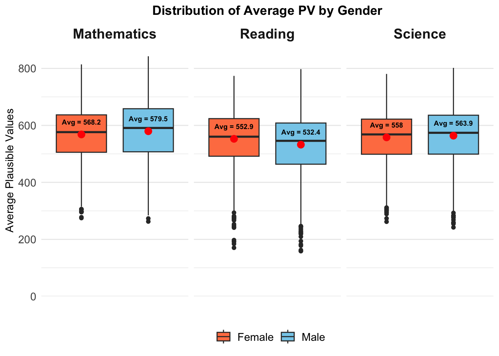

pacman::p_load(tidyverse, haven, ggrepel, patchwork,
ggthemes, hrbrthemes)Take-home Exercise 2
Project Objectives
In this Take-home Exercise 2, I have chosen one of my classmates’ Take-home Exercise 1 submissions and analyzed the charts in terms of clarity and aesthetics. My task involves critically assessing the design and visual presentation of the chosen submission. Using the data visualization design principles and best practices learned in Lessons 1 and 2, I will create a sketch for an alternative design. Subsequently, I will remake the original design using the ggplot2, ggplot2 extensions, and tidyverse packages to enhance its visual effectiveness and clarity.
1. Data Preparation
1.1 Installing R packages
pacman::p_load() function from the pacman package is used in the following code chunk to install and call the libraries of multiple R packages:
1.2 Importing Dataset
“Student questionnaire data file” from the PISA 2022 database is provided for the task.
The code chunk below uses read_sas() of haven to import PISA data into R environment.
stu_qqq <- read_sas("data/STU_QQQ_SAS/cy08msp_stu_qqq.sas7bdat")stu_qqq_SG <- stu_qqq %>%
filter(CNT == "SGP")write_rds(stu_qqq_SG,
"data/STU_QQQ_SAS/stu_qqq_SG.rds")We upload the file as stu_qqq_Sg.
stu_qqq_Sg <-
read_rds("data/STU_QQQ_SAS/stu_qqq_SG.rds")The makeover is designed to refine the original visualization while staying true to the dataset’s range, as selected by my classmate. Therefore, I will be focusing on the same variables: student performance in mathematics, reading, and science, along with school identification, gender, and parental education levels.
Related_math_read_scie_data <- stu_qqq_SG %>%
select(contains(c("ID","ST004D01T","math", "read", "scie","ST259Q01JA","ST259Q02JA","ST005Q01JA","ST007Q01JA")))write_rds(Related_math_read_scie_data,
"data/Related_math_read_scie_data.rds")Related_math_read_scie_data <-
read_rds("data/Related_math_read_scie_data.rds")2. Critique I
2.1 Original Design
The original design is shown below. 
The use of histograms with median lines, is a good start for visualizing the distribution of plausible values (PV) across different subjects. However, there are several improvements that could be made.
2.2 Enhancements for Clarity
(a) Main Graph Title Refinement
The initial graph title ‘Distributions of Maths/Reading/Science with Median Lines’ lacked descriptive power. A revised title, ‘Distribution of Average Plausible Values in Among Students in Singapore,’ provides a more detailed and informative overview of the data presented.
(b) X-axis Labeling
The use of column names such as ‘avg_pvMATH’, ‘avg_pvREAD’, and ‘avg_pvSCIE’ as x-axis labels could lead to confusion due to their technical nature. A more accessible approach is to apply a unified label, ‘Average Plausible Values,’ which directly communicates the essence of the data to the reader.
(c) Y-axis Scale Uniformity
It is imperative to synchronize the y-axis scales for all histograms to enable a fair and accurate comparative analysis. The current graphs exhibit varying y-axis scales, which could skew the interpretation of the data. By standardizing these scales, we establish a consistent metric for evaluating the distributions of student performance in the various subjects.
(d) Y-axis Label Simplification
With the y-axis scales aligned, we can enhance the graphs’ neatness by eliminating the ‘Count’ labels and the associated numerical values on the y-axis for the second and third histograms. This declutters the visual space and directs focus to the data itself.
(e) Titles for Individual Graphs
The generic ‘I’, ‘II’, and ‘III’ designations for individual graph titles are less informative. These should be replaced with the subject names ‘Mathematics’, ‘Reading’, and ‘Science’ to convey the content of each graph to the viewer.
(f) Median Annotation Clarity
The current placement of the median value at the bottom intersects with the x-axis, which hampers legibility. Moving this annotation on top of the bars ensures it is unobstructed and easily readable.
2.3 Aesthetic Improvements
(a) Centering the Main Graph Title
A central alignment for the main graph title is aesthetically pleasing and anchors the viewer’s attention, compared to the original left-aligned positioning.
(b) Gridline and Background Differentiation
The grey bars against a grey background, intersected by white gridlines, result in a low-contrast visual that can be difficult to interpret. By removing the grey background and recoloring the gridlines to grey, we create a stark contrast that allows the data bars to stand out sharply, enhancing the graph’s readability.
2.4 Sketch of Proposed Design
2.5 Data Wrangling
Calculate the mean of Plausible Values 1 through 10 for Mathematics, Reading and Science respectively.
Related_math_read_scie_data <- Related_math_read_scie_data %>%
mutate(avg_pvMATH = rowMeans(select(., ends_with("Math")), na.rm = TRUE))
Related_math_read_scie_data <- Related_math_read_scie_data %>%
mutate(avg_pvREAD = rowMeans(select(., ends_with("READ")), na.rm = TRUE))
Related_math_read_scie_data <- Related_math_read_scie_data %>%
mutate(avg_pvSCIE = rowMeans(select(., ends_with("SCIE")), na.rm = TRUE))
Related_math_read_scie_data %>%
select(CNTSCHID, CNTSTUID,avg_pvMATH, avg_pvREAD, avg_pvSCIE) %>%
head(5)# A tibble: 5 × 5
CNTSCHID CNTSTUID avg_pvMATH avg_pvREAD avg_pvSCIE
<dbl> <dbl> <dbl> <dbl> <dbl>
1 70200052 70200001 605. 667. 640.
2 70200134 70200002 690. 628. 672.
3 70200112 70200003 677. 583. 660.
4 70200004 70200004 401. 361. 344.
5 70200152 70200005 436. 476. 479.2.6 Final Design
After performing the necessary modifications, the final code and design are as follows.
create_histogram <- function(data, subject_column, subject_name, max_y_value, show_labels = TRUE) {
median_value <- median(data[[subject_column]])
p <- ggplot(data, aes_string(x = subject_column)) +
geom_histogram(bins = 10,
boundary = 100,
color = "black",
fill="grey") +
geom_vline(xintercept = median_value, color = "red", linetype = "dashed") +
annotate("text", x = median_value, y = max_y_value * 0.9,
label = paste("Median = ", round(median_value, 2)),
vjust = 0, color = "red", size = 3) + # Adjusted placement for annotation
theme_minimal() +
theme(
panel.grid.major = element_line(color = "grey", size = 0.1),
panel.grid.minor = element_blank(),
panel.background = element_blank(),
axis.text.y = element_text(color = "black"),
axis.text.x = element_text(color = "black"),
axis.title.x = element_blank(), # Remove x-axis title
plot.title = element_text(size = 14, face = "bold", hjust = 0.5)
) +
coord_cartesian(ylim = c(0, max_y_value)) # Set y-axis limits
if (!show_labels) {
p <- p + theme(
axis.title.y = element_blank(),
axis.text.y = element_blank(),
axis.ticks.y = element_blank()
)
} else {
p <- p + labs(y = "Count")
}
p <- p + labs(title = subject_name)
return(p)
}
# Calculate the maximum y-value to use as the y-axis limit
max_y_value <- max(
max(table(cut(Related_math_read_scie_data$avg_pvMATH, breaks = 10))),
max(table(cut(Related_math_read_scie_data$avg_pvREAD, breaks = 10))),
max(table(cut(Related_math_read_scie_data$avg_pvSCIE, breaks = 10)))
) * 1.3 # Extend y-axis to fit annotation
# Create histograms with consistent y-axis limits
p1 <- create_histogram(Related_math_read_scie_data, "avg_pvMATH", "Mathematics", max_y_value, TRUE)
p2 <- create_histogram(Related_math_read_scie_data, "avg_pvREAD", "Reading", max_y_value, FALSE)
p3 <- create_histogram(Related_math_read_scie_data, "avg_pvSCIE", "Science", max_y_value, FALSE)
# Create an empty plot with just the x-axis label
x_axis_label <- ggplot() +
theme_void() +
labs(x = "Average Plausible Values") +
theme(
plot.margin = margin(t = 0, b = -1, l = 0, r = 0, unit = "cm"), # negative bottom margin to move up the x-axis title
axis.title.x = element_text(hjust = 0.5),
axis.ticks.length = unit(-2, "mm"), # negative tick length to move up the x-axis title
axis.text.x = element_text(margin = margin(t = -10, b = -15)) # negative margins to move up the x-axis values
) +
scale_y_continuous(expand = expansion(mult = c(0, 0.05))) # reducing the expansion
# Combine the plots with the x-axis label plot
combined_plot <- (p1 | p2 | p3) /
x_axis_label +
plot_layout(
guides = 'collect',
heights = c(1, 0.1) # Adjust these values as needed to control the space
) +
plot_annotation(
title = 'Distribution of Average PV Among Students in Singapore'
) &
theme(
plot.title = element_text(face = "bold", hjust = 0.5) # Center the title
)
# Display the combined plot
combined_plot3. Critique II
3.1 Original Design
The original design is shown below.

3.2 Enhancements for Clarity
(a) Alternative chart type for better analysis
Our primary objective is to analyze and compare the score distributions across genders. Given this focus, box plots or violin plots would serve as highly effective visual tools. These types of plots portrays distribution patterns, effectively revealing disparities in median scores and the extent of variation within each gender category. In contrast, histograms, while useful for depicting frequency distributions, fall short in offering a comprehensive view of the data’s spread and central tendencies, such as medians and quartiles. This limitation makes histograms less suitable for our purpose of detailed comparison. Therefore, to achieve a more nuanced and comparative analysis, I recommend transitioning from histograms to violin plots, as they not only highlight the central tendencies but also elegantly encapsulate the full distribution of scores across genders.
3.3 Sketch of Proposed Design
3.4 Final Design
After performing the necessary modifications, the final code and design are as follows.
library(ggplot2)
library(dplyr)
library(tidyr)
# Prepare the data with gender and average scores
gender_scores <- Related_math_read_scie_data %>%
mutate(
Gender = ifelse(ST004D01T == 1, "Female", "Male"),
AvgMathPV = avg_pvMATH,
AvgReadPV = avg_pvREAD,
AvgSciePV = avg_pvSCIE
)
# Reshape the data to long format
long_format <- gender_scores %>%
select(Gender, AvgMathPV, AvgReadPV, AvgSciePV) %>%
pivot_longer(
cols = c(AvgMathPV, AvgReadPV, AvgSciePV),
names_to = "Subject",
values_to = "Score"
) %>%
mutate(Subject = recode(Subject,
AvgMathPV = "Mathematics",
AvgReadPV = "Reading",
AvgSciePV = "Science"))
# Calculate the average scores for each Subject and Gender
avg_scores <- long_format %>%
group_by(Subject, Gender) %>%
summarize(AvgScore = mean(Score, na.rm = TRUE), .groups = 'keep')
# Create the boxplots with specified colors and apply a minimalistic theme
boxplot <- ggplot(long_format, aes(x = Gender, y = Score, fill = Gender)) +
geom_boxplot(position = position_dodge(width = 0.75)) +
geom_point(data = avg_scores, aes(x = Gender, y = AvgScore, group = Gender),
position = position_dodge(width = 0.75), color = "red", size = 3, show.legend = FALSE) +
geom_text(data = avg_scores, aes(x = Gender, y = AvgScore, label = paste("Avg =", round(AvgScore, 1))),
position = position_dodge(width = 0.75), vjust = -2, color = "black", size = 2.5, fontface = "bold", show.legend = FALSE) +
scale_fill_manual(values = c("Female" = "coral", "Male" = "skyblue")) + # Added the missing `+` here
labs(fill = "") +
scale_y_continuous(expand = expansion(mult = c(0, 0.05)), limits = c(0, NA)) +
labs(
title = "Distribution of Average PV by Gender",
x = "",
y = "Average Plausible Values"
) +
facet_wrap(~Subject, strip.position = "top") +
theme_minimal() +
theme(
legend.position = "bottom",
legend.title = element_text(size = 11),
legend.text = element_text(size = 11),
strip.text = element_text(size = 14, hjust = 0.5, face = "bold"),
plot.title = element_text(size = 13, hjust = 0.5, face = "bold"),
axis.text.x = element_blank(), # Remove x-axis text labels
axis.text.y = element_text(size = 11),
axis.title.y = element_text(size = 11),
panel.grid.major.x = element_blank(),
panel.grid.minor.x = element_blank(),
strip.background = element_blank()
)
# Print the boxplot
print(boxplot)
4. Critique III
4.1 Original Design
The original design is shown below.
4.2 Enhancements for Clarity
(a) Main Graph Title Refinement
The initial graph title ‘The Relationship between School and Performances’ lacked descriptive power. A more precise title, ‘School Influence on Student Performance Across Subjects,’ provides a comprehensive and informative overview of the data presented.
(b) X-axis Labeling Efficiency
The repetition of ‘School ID’ on the x-axis is unnecessary. We will consolidate this label for a cleaner look and enhanced readability. Additionally, to prevent the overlapping of school IDs, we will extend the x-axis from one end of the chart to the other, utilizing the full width of the graph for a more spaced and legible display.
(c) Y-axis Scale and Representation Adjustment
The y-axis currently does not start from zero, which may lead to a misinterpretation of the performance variances. To address this, we will standardize the y-axis across all scatterplots. By combining all subjects into one scatterplot, we’ll differentiate them not with individual titles but with a coded color scheme for the dots and lines. The y-axis labels will be unified to ‘Average Plausible Values,’ simplifying the comparison across subjects.
4.3 Aesthetic Improvements
(a) Centralized Main Graph Title
We will shift the main graph title to a central position, enhancing the visual symmetry and appeal of the chart, thus drawing the viewer’s attention more effectively.
(b) Enhanced Legend and Color Differentiation
To aid interpretation, we will introduce a legend that clearly links the color scheme to the respective subjects being displayed. This is not only visually appealing but also support the viewer in decoding the information.
(c) Background and Gridline Adjustment
To accommodate the various colors present in the graph and enhance visual clarity, we will remove the grey background. This simplification will reduce visual clutter and focus attention on the data points. Additionally, to maintain gridline visibility while ensuring they are not visually intrusive, we will change their color to a subtle grey. This adjustment will create a cleaner and more visually pleasing graph that is easier on the eyes.
4.4 Sketch of Proposed Design
4.5 Final Design
After performing the necessary modifications, the final code and design are as follows.
library(ggplot2)
library(dplyr)
library(tidyr)
# Calculate the school-wise average scores for each subject
Related_math_read_scie_data <- Related_math_read_scie_data %>%
group_by(CNTSCHID) %>%
mutate(
avg_pvMATH_school = mean(avg_pvMATH, na.rm = TRUE),
avg_pvREAD_school = mean(avg_pvREAD, na.rm = TRUE),
avg_pvSCIE_school = mean(avg_pvSCIE, na.rm = TRUE)
) %>%
ungroup()
# Reshape the data to long format for plotting
long_format <- Related_math_read_scie_data %>%
select(CNTSCHID, avg_pvMATH_school, avg_pvREAD_school, avg_pvSCIE_school) %>%
pivot_longer(
cols = starts_with("avg_pv"),
names_to = "Subject",
values_to = "Score"
) %>%
mutate(Subject = recode(Subject,
"avg_pvMATH_school" = "Mathematics",
"avg_pvREAD_school" = "Reading",
"avg_pvSCIE_school" = "Science"))
# Create the combined scatterplot
p_combined <- ggplot(data = long_format, aes(x = CNTSCHID, y = Score, color = Subject)) +
geom_point() +
geom_smooth(aes(group = Subject), method = lm, se = FALSE) +
scale_color_discrete() + # Use default color scheme
labs(
title = "School Influence on Student Performance Across Subjects",
x = "School ID",
y = "Average Plausible Values"
) +
scale_x_continuous(expand = expansion(mult = c(0.01, 0.01))) + # Adjust x-axis limits
scale_y_continuous(expand = expansion(mult = c(0.01, 0.01)), limits = c(0, NA)) + # Start y-axis at 0, adjust if needed
theme_minimal() +
theme(
plot.title = element_text(hjust = 0.5, face = "bold", size = 14),
axis.title.x = element_text(size = 11),
axis.title.y = element_text(size = 11),
axis.text.x = element_text(hjust = 1, angle = 0), # Horizontal x-axis text
axis.text.y = element_text(size = 11),
panel.grid.major.x = element_line(color = "grey90"), # Add vertical gridlines
panel.grid.minor.x = element_blank(), # Remove minor vertical gridlines
panel.grid.major.y = element_line(color = "grey90"), # Add major horizontal gridlines
panel.grid.minor.y = element_blank(), # Remove minor horizontal gridlines
legend.position = "bottom",
legend.title = element_blank(),
legend.text = element_text(size = 12)
) +
guides(color = guide_legend(title = "Subject", override.aes = list(size = 4))) # Ensure legend is shown correctly
# Print the scatterplot
print(p_combined)5. Critique IV
5.1 Original Design
The original design is shown below.
5.2 Enhancements for Clarity
(a) X-axis and Main Title Labeling Correction
The current x-axis title ‘Socioeconomic Status (Lower values indicate higher status)’ does not accurately reflect the data, which is based on the ‘Parent_Edu_level’ derived from our data wrangling process. We will update the x-axis label to ‘Parental Education Level’ to accurately describe the underlying data dimension. As well as the main title of the graph.
(b) Legend Labeling Refinement
The term ‘colour’ in the legend is superfluous and can lead to confusion. Additionally, to ensure grammatical correctness and consistency, ‘Read’ will be updated to ‘Reading’, and ‘Maths’ will be expanded to ‘Mathematics’.
(c) Axis Scale Adjustment
Currently, the axes do not begin at zero, which can potentially misrepresent the data. We will adjust the axis scales to start at zero to provide a true-to-scale representation of the data points.
5.3 Aesthetic Improvements
(a) Harmonizing Color Palette
We will adopt a palette of soft, natural colors for the primary data display, reserving more vivid or darker shades for elements that require emphasis or immediate attention from the viewer.
5.4 Sketch of Proposed Design
5.5 Final Design
After performing the necessary modifications, the final code and design are as follows.
library(ggplot2)
library(dplyr)
# Create a new column 'Parent_Edu_level'
Related_math_read_scie_data <- Related_math_read_scie_data %>%
mutate(Parent_Edu_level = ST005Q01JA + ST007Q01JA)
# Create a dataframe for plotting
df <- Related_math_read_scie_data
# Plot the relationship between performance and socioeconomic status
p_combined <- ggplot(df, aes(x = Parent_Edu_level)) +
geom_point(aes(y = avg_pvMATH, color = "Mathematics"), alpha = 1, size = 1.5, na.rm = TRUE) +
geom_smooth(aes(y = avg_pvMATH, color = "Mathematics"), method = "lm", se = FALSE, na.rm = TRUE) +
geom_point(aes(y = avg_pvREAD, color = "Reading"), alpha = 1, size = 1.5, na.rm = TRUE) +
geom_smooth(aes(y = avg_pvREAD, color = "Reading"), method = "lm", se = FALSE, na.rm = TRUE) +
geom_point(aes(y = avg_pvSCIE, color = "Science"), alpha = 1, size = 1.5, na.rm = TRUE) +
geom_smooth(aes(y = avg_pvSCIE, color = "Science"), method = "lm", se = FALSE, na.rm = TRUE) +
labs(
title = "Relationship between Parental Education Level and Student Performance",
x = "Parental Education Level (Lower values indicate higher education levels)",
y = "Average Plausible Values",
) +
scale_color_discrete() + # Use default color scheme
theme_minimal() +
theme(
plot.title = element_text(face = "bold", hjust = 0.5, size = 12),
axis.title = element_text(size = 11),
axis.text.x = element_text(angle = 0, vjust = 0.5, size = 9),
axis.text.y = element_text(angle = 0, vjust = 0.5, size = 9),
legend.position = "bottom",
legend.title = element_blank(),
plot.margin = margin(t = 10, r = 10, b = 10, l = 10),
legend.text = element_text(size = 11),
panel.grid.minor.y = element_blank()
) +
expand_limits(y = 0) # Ensure the y-axis starts at zero
# Print the plot
print(p_combined)6. Learning Points
The Take Home Exercise 2 was instrumental in deepening my understanding of the importance of selecting appropriate visualizations and tailoring charts to the audience’s perspective. It was an enlightening experience to learn about efficient coding practices from my peers’ work. This exercise also afforded me the opportunity to delve deeper into ggplot, enhancing my ability to add layers and craft more insightful charts. It was a valuable exercise in not just honing technical skills but also in appreciating the nuances of effective data visualization.